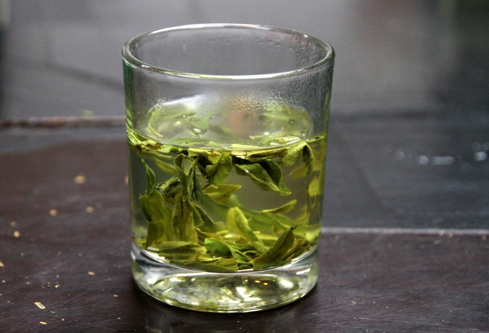

岚坞云雾（烘青绿茶）
以一芽一叶为主，3 月下旬至 4 月上旬采制。条索紧细，汤色清亮。
明前茶：岚坞云雾 3 月下旬开采，日期随天气变化，不承诺固定到货日。
| 等级 | 批发价 |
|---|---|
| 特级 | 680 元/公斤 |
| 一级 | 420 元/公斤 |
下列批发价含税，不含运费。零售价和礼盒价待补充。
以一芽一叶为主，3 月下旬至 4 月上旬采制。条索紧细，汤色清亮。
明前茶：岚坞云雾 3 月下旬开采，日期随天气变化，不承诺固定到货日。
| 等级 | 批发价 |
|---|---|
| 特级 | 680 元/公斤 |
| 一级 | 420 元/公斤 |
一芽二叶，4 月中旬至 5 月上旬采制。耐泡，适合日常饮用和餐饮用茶。
| 等级 | 批发价 |
|---|---|
| 一级 | 260 元/公斤 |
| 二级 | 180 元/公斤 |
4 月下旬起用春茶鲜叶制作，夏秋茶不做红茶。
| 等级 | 批发价 |
|---|---|
| 特级 | 560 元/公斤 |
| 一级 | 340 元/公斤 |

本社茶品实拍待补充。
每个品种可寄 20 克样品，样品免费，运费由收件方承担。
同一单位一年内同一品种只寄一次。
不代客户设计包装，不印制客户商标。
批发通过邮件联系。不设网上下单和在线支付，不做直播带货。
我们不宣称茶叶有治疗或保健功效。
Hangzhou-Teeplantage-04-Straeucher-2012-gje.jpg — Gerd Eichmann; https://commons.wikimedia.org/wiki/File:Hangzhou-Teeplantage-04-Straeucher-2012-gje.jpg; CC BY-SA 4.0 (https://creativecommons.org/licenses/by-sa/4.0); full-frame resized/JPEG re-encoded derivative. Same source license retained.
Hangzhou-Teeplantage-36-Teeglas-2012-gje.jpg — Gerd Eichmann; https://commons.wikimedia.org/wiki/File:Hangzhou-Teeplantage-36-Teeglas-2012-gje.jpg; CC BY-SA 4.0 (https://creativecommons.org/licenses/by-sa/4.0); full-frame resized/JPEG re-encoded derivative. Same source license retained.
Hangzhou-Teeplantage-24-Trockengefaesss Haende-2012-gje.jpg — Gerd Eichmann; https://commons.wikimedia.org/wiki/File:Hangzhou-Teeplantage-24-Trockengefaesss_Haende-2012-gje.jpg; CC BY-SA 4.0 (https://creativecommons.org/licenses/by-sa/4.0); full-frame resized/JPEG re-encoded derivative. Same source license retained.
Songyang tea field.jpg — Lishuilynn; https://commons.wikimedia.org/wiki/File:Songyang_tea_field.jpg; CC BY-SA 4.0 (https://creativecommons.org/licenses/by-sa/4.0); full-frame resized/JPEG re-encoded derivative. Same source license retained.